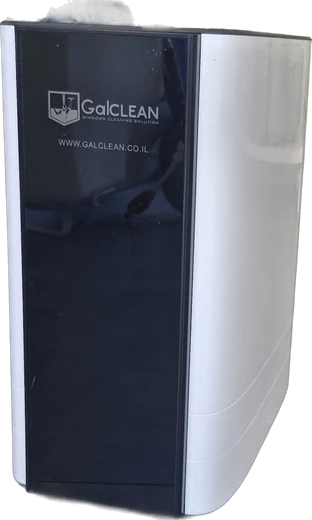
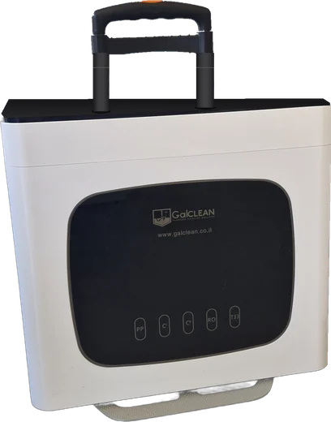
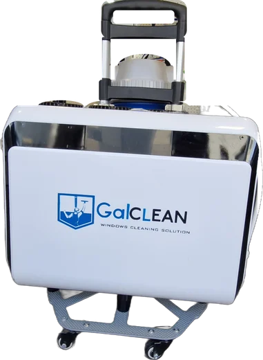
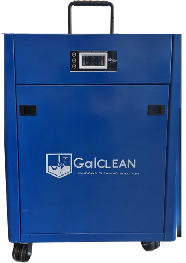
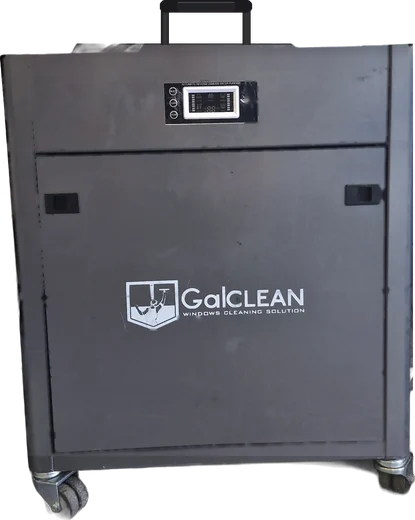
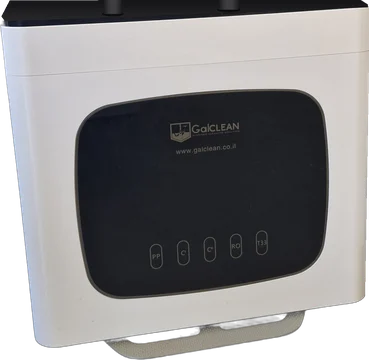
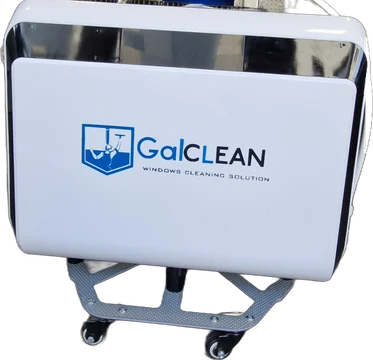
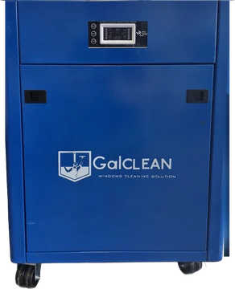
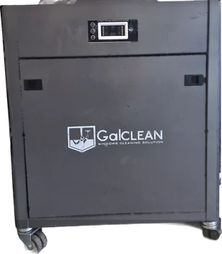
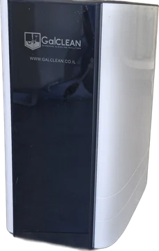

GALPRO and GALHOME are RO/DI window-cleaning systems with a built-in pump, in units up to 4× shorter than comparable machines sold in the US today. We are looking for one serious US partner to sell, demonstrate and service them.





RO/DI pure-water cleaning is already standard among US window cleaners, and every serious unit reaches 0 TDS. The difference is in the machine: the US units we compared are 29 to 60 in (74–152 cm) long, and most rely on tap pressure alone. GALPRO delivers the same flow in a compact body with the pump built in.
Longest side 15 to 22.4 in (38–57 cm) across the range, against 29 to 60 in (74–152 cm) for comparable US units. Easier to load, to carry up stairs and into elevators, and to set down on a balcony.
US flow ratings are measured at 50 to 60 PSI tap pressure. Without a pump, flow falls on weak taps and at height, and RO output drops further in cold water: one US manual notes low flow below 50°F (10°C). GALPRO's built-in pump holds pressure steady, so performance stays more consistent from site to site, with no separate booster to buy or carry.
Reverse osmosis takes the water down, a DI resin stage takes it to 0 TDS. Every GALPRO model has a built-in digital TDS meter, so the crew sees water quality while working.
Each system ships as a complete, ready-to-work kit. With a water-fed pole it cleans up to 65 ft (20 m) from the ground, and rope-access crews use it on high-rise facades.
Working in window cleaning since 2009 and supplying professional cleaning equipment since 2015. Authorized Israeli distributor of Wagtail, Ettore and Reach-It.
GALPRO and GALHOME are developed in-house. In Israel we sell to cleaning contractors, property managers, businesses and homeowners through a demo-led model: the customer sees the system working on their own glass before buying.
| Model | Flow GPM (L/min) | Pump | Size L×W×H in (cm) | Weight lbs (kg) | Digital TDS meter | Best for |
|---|---|---|---|---|---|---|
| GALHOME · residential | ||||||
GALHOME Lite | 0.26(1) | No, runs without power | 13.8×8.3×15(35×21×38) | Being measured | No | Homes and balconies up to 46 ft (14 m) |
GALHOME Plus | 0.40(1.5) | Yes | 13.8×8.3×15(35×21×38) | Being measured | No | Private homes and penthouses |
| GALPRO · professional | ||||||
GALPRO Business | 0.53(2) | Yes | 18.5×6.3×16.9(47×16×43) | Being measured | Yes | Large homes with a lot of glass, small businesses |
GALPRO Expert | 1.06(4) | Yes | 18.5×14.6×18.1(47×37×46) | Being measured | Yes | Cleaning contractors, hotels, commercial buildings |
GALPRO Turbo | 1.72(6.5) | Yes | 18.9×13.4×22.4(48×34×57) | 77(35) | Yes | Contractors who need faster coverage |
GALPRO Ultra | 2.38(9) | Yes | 21.3×15×22.4(54×38×57) | 88(40) | Yes | Large buildings, highest output |
Bar length = the unit's longest side. Under each name: full size, length × width × height, in inches and centimetres.
US units without a built-in pump are rated at 50–60 PSI tap pressure. They lose flow on weak taps and at height, and RO output also drops in cold water. GALPRO's built-in pump keeps pressure steady, so its performance holds up better from site to site.
All models: reverse osmosis + DI resin to 0 TDS. GALHOME Lite and Plus share the same body; Plus adds the pump.

| Unit | Flow GPM (L/min) | Pump | Size L×W×H in (cm) | Weight lbs (kg) | US price | GALPRO edge |
|---|---|---|---|---|---|---|
| GALPRO Business | 0.53(2) | Built in | 18.5×6.3×16.9(47×16×43) | Being measured | On request | |
| XERO Pure | 0.5*(1.9) | No | 51.6×16.1×11.8(131×41×30) | 51(23) | $1,899 | 5× less volume, 2.8× shorter, pump included |
| Pure Water Power Single | 0.5–1.0*(1.9–3.8) | No | 50×20.1×15(127×51×38) | 75(34) | $1,999 | 7.6× less volume, 2.7× shorter, pump included |

| Unit | Flow GPM (L/min) | Pump | Size L×W×H in (cm) | Weight lbs (kg) | US price | GALPRO edge |
|---|---|---|---|---|---|---|
| GALPRO Expert | 1.06(4) | Built in | 18.5×14.6×18.1(47×37×46) | Being measured | On request | |
| Unger HydroPower RO | 1.0(3.8) | Yes | 27.2×18.1×35(69×46×89) | 99(45) | $3,919–5,437 | 3.5× less volume, half the height |
| XERO Pure MAX | 1.0*(3.8) | No | 51.6×16.1×13.4(131×41×34) | 73(33) | $2,899 | 2.3× less volume, 2.8× shorter, pump included |
| Triple Crown Voyager | 0.97*(3.7) | Optional add-on | 29.1×11.4×15(74×29×38) | 40(18) | $1,299 | 18.5" vs 29.1" long, pump included |
| Triple Crown Phaser | 1.05*(4.0) | Optional add-on | 59.8×7.9×7.1(152×20×18) | 29(13) | $900 | 18.5" vs 59.8" long, pump included |
In this comparison, Expert is the only 1 GPM unit that combines a built-in pump with a body under 20 in (51 cm). The only US unit here with a pump, Unger HydroPower RO, is almost twice as tall.
Voyager and Phaser are lighter and cost less. Both run on tap pressure unless a separate booster pump is bought, and both need a longer space to transport.
*Unit without a built-in pump: flow rated at 50–60 PSI tap pressure, and it falls on weak taps and in cold water.

| Unit | Flow GPM (L/min) | Pump | Size L×W×H in (cm) | Weight lbs (kg) | US price | GALPRO edge |
|---|---|---|---|---|---|---|
| GALPRO Turbo | 1.72(6.5) | Built in | 18.9×13.4×22.4(48×34×57) | 77(35) | On request | |
| XERO Pure MAX Power | 1.0, up to 3.0 with pump(3.8, up to 11.4) | Yes | 51.6×18.9×16.5(131×48×42) | 119(54) | $5,099–5,199 | 2.8× less volume, 2.3× shorter, 42 lbs lighter |
| Tucker 4060 | 1.5*(5.7) | No | 16.1×18.5×42.1(41×47×107) | 95(43) | $3,095 | 2.2× less volume, 1.9× lower, 18 lbs lighter, pump included |
| Pure Water Power Double | 1.0–1.75*(3.8–6.6) | No | 15.7×16.9×57.1(40×43×145) | 82(37) | $2,999 | 2.7× less volume, 2.5× lower, pump included |

| Unit | Flow GPM (L/min) | Pump | Size L×W×H in (cm) | Weight lbs (kg) | US price | GALPRO edge |
|---|---|---|---|---|---|---|
| GALPRO Ultra | 2.38(9) | Built in | 21.3×15×22.4(54×38×57) | 88(40) | On request | |
| Pure Water Power Little Beast | 2.5 with pump(9.5) | Yes | 15.7×16.9×57.1(40×43×145) | 141(64) | $4,598–4,755 | 2.1× less volume, 2.5× lower, 53 lbs lighter |
| Triple Crown SG2 | 2.5(9.5) | Yes | 20.1×20.9×50(51×53×127) | 90(41) | $2,795 | 2.9× less volume, 2.2× lower |
Tallest point of Turbo and Ultra: 22.4 in (57 cm). The US units here stand 42 to 57 in (107–145 cm) tall, or lie 51.6 in (131 cm) long.
Lighter than every US unit in this comparison, from 2 lbs against SG2 to 53 lbs against Little Beast.
Three US units here cost less. Compare what you get:
*Unit without a built-in pump: flow rated at 50–60 PSI tap pressure, and it falls on weak taps and in cold water. US prices: retailer list prices before state sales tax (the US has no VAT), November 2026. Volume = length × width × height of the unit.
The US RO/DI window-cleaning units we compared are contractor machines, 29 to 60 in (74–152 cm) long, and we found none built for home use. GALHOME brings the same RO + DI purification into a 13.8 × 8.3 × 15 in (35 × 21 × 38 cm) unit, which opens a homeowner and small-business segment the existing products don't serve.
Runs on tap pressure with no power connection. For homes and balconies up to 46 ft (14 m).
13.8 × 8.3 × 15 in (35 × 21 × 38 cm) · RO + DI · no electricity neededSame body as Lite, with a built-in pump for steady pressure. For private homes and penthouses.
13.8 × 8.3 × 15 in (35 × 21 × 38 cm) · RO + DI · built-in pump
For a distributor, GALHOME adds a second sales channel next to the contractor business, sold the way it sells in Israel: through a demo on the customer's own windows.